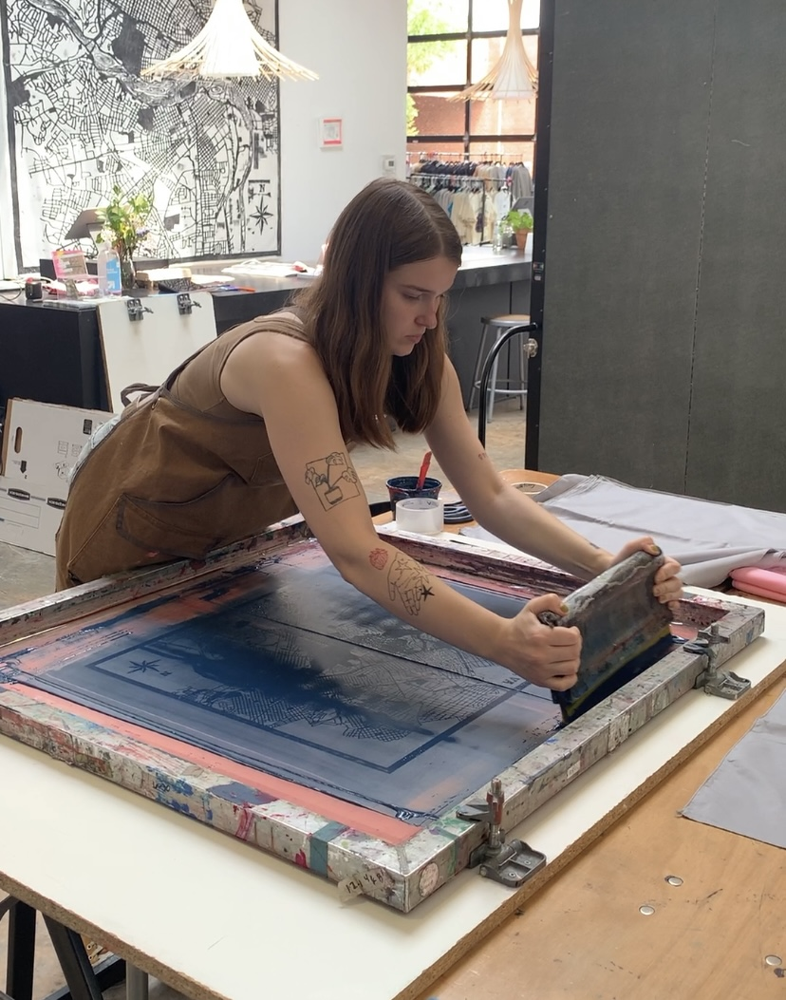

✸ email: alyssa@dixongroup.net ✸
I graduated with a BFA in Graphic Design with a minior in Printmaking in May 2024. I'm originally from Carroll County, Maryland and I'm 22 years old. I’m a 5’7” white female with pin straight shoulder length hazelnut colored hair. I have a longer, straight nose with a mole on the right side of my cheek. I have pierced ears and small tattoos running up both arms and will typically be wearing muted earth toned clothes. While I reside in Richmond, VA, I completed a handful of internships, including a Spring 2023 internship as a junior designer for The Moment, a quarterly issue for Boketto Wellness, a screen printmaking summer internship atStudio Two Three, a gallery intern at 1708 Gallery, a studio monitor position at the Visual Arts Center, and a graphic design internship at Art 180. As a post graduate, I do some design freelance in design marketing while illsutrating for Trill Mag, a small magazine publishing company.
